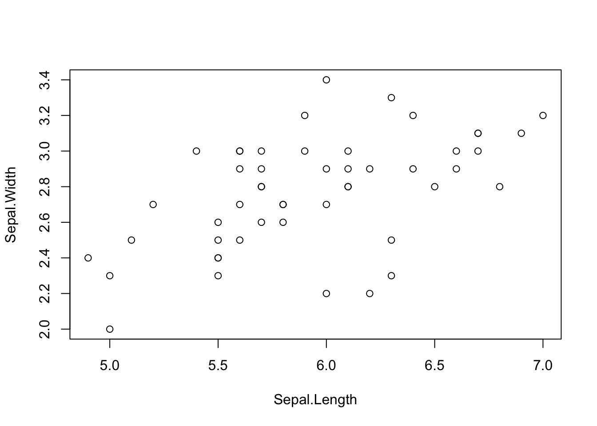
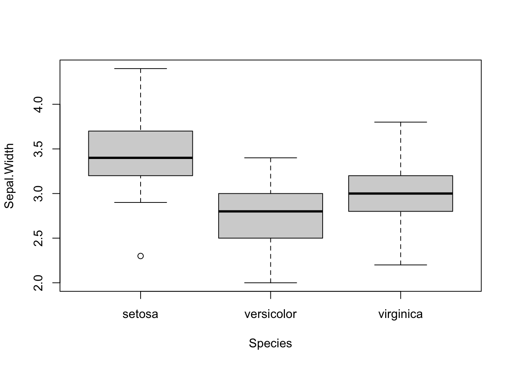

2 Reminder: R basics
This chapter reminds you about basic R data types and how to operate on them. Also suitable for self-study prior to the course!
2.1 Your R System
In this course, we work with the combination of R + RStudio.
- R is the calculation engine that performs the computations.
- RStudio is the editor that helps you sending inputs to R and collect outputs.
Make sure you have a recent version of R + RStudio installed on your computer.
If you have never used RStudio, here is an introductory video.
For Windows / Mac, R should work out of the box. For other UNIX based systems, may also need to install
build-essential
gfortran
libmagick++-dev
r-base-dev
cmakeIf you are new to installing packages on Debian / Ubuntu, etc., type the following:
sudo apt update && sudo apt install -y --install-recommends build-essential gfortran libmagick++-dev r-base-dev cmakeIf you use other operating systems, you presumably will be able to install the necessary packages on your own.
2.1.1 Installing Libraries
The R engine comes with a number of base functions, but one of the great things about R is that you can extend these based functions by libraries that can be programmed by anyone. In principle, you can install libraries from any website or file. In practice, however, most commonly used libraries are distributed via two major repositories. For statistical methods, this is CRAN, and for bioinformatics, this is Bioconductor.
To install a package from a library, use the command
install.packages(LIBRARY)Exchanging LIBRARY with the name of the library you want to install. The default is to search the package in CRAN, but you can specify other repositories or file locations in the function. To save typing for you, you can install an entire list of libraries that you will need by exexcuting the following commands:
install.packages("ape")
install.packages("bipartide")
install.packages("boot")
install.packages("bootstrap")
install.packages("brms")
install.packages("car")
install.packages("caper")
install.packages("devtools")
install.packages("DHARMa")
install.packages("effects")
install.packages("gdata")
install.packages("geiger")
install.packages("glmmTMB")
install.packages("knitr")
install.packages("lavaan")
install.packages("lavaanPlot")
install.packages("lme4")
install.packages("lmerTest")
install.packages("MASS")
install.packages("mgcv")
install.packages("mlmRev")
install.packages("modEvA")
install.packages("multcomp")
install.packages("MuMIn")
install.packages("nlme")
install.packages("pbkrtest")
install.packages("phytools")
install.packages("piecewiseSEM")
install.packages("quantreg")
install.packages("readxl")
install.packages("RLRsim")
install.packages("robustbase")
install.packages("semPlot")
install.packages("stringr")
install.packages("vegan")Moreover, in this book, we will often use data sets from the EcoData package, which is not on CRAN. To install the package, run:
devtools::install_github(repo = "florianhartig/EcoData", subdir = "EcoData",
dependencies = TRUE, build_vignettes = TRUE)2.2 Operating with data in R
2.2.1 Exploring Data Structures
A fundamental requirement for working with data is representing it in a computer. In R, if I type
x <- 1the variable x now contains some data, namely the value 1, and I can use x in as a placeholder for the data it contains in further calculations. With only minor differences, the more common syntax
x = 1does the same. If you have worked with R previously, you should know this already, and you should also know that the commands
class(x)
dim(x)
str(x)allow you to explore the structure of variables and the data they contain. Ask yourself, or discuss with your partner(s) - what is the meaning of the three functions, and what is the structure / properties of the following data types in R:
- Atomic types (which atomic types exist),
- list,
- vector,
- data.frame,
- matrix,
- array.
Moreover, what is the data type of the iris data set, which is built-in in R under the name
iris2.2.2 Dynamic Typing
R is a dynamically typed language, which means that the type of variables is determined automatically depending on what values you supply. Try this:
x = 1
class(x)
x = "dog"
class(x)This also works if a data set already exists, i.e. if you assign a different value, the type will automatically be changed. Look at what happens when we assign a character value to a previously numeric column in a data.frame:
iris$Sepal.Length[2] = "dog"
str(iris)Note that all numeric values are changed to characters as well. You can try to force back the values to numeric by:
iris$Sepal.Length = as.numeric(iris$Sepal.Length)Have a look at what this does to the values in iris$Sepal.Length.
Note: The actions above operate on a local copy of the iris data set. You don’t overwrite the base data and can use it again in a new R session or reset it with data(iris).
2.2.3 Data Selection, Slicing and Subsetting
2.2.3.1 Subsetting and Slicing for Single Data Types
We often want to select only a subset of our data. You can generally subset from data structures using indices and TRUE/FALSE (or T/F). Here for a vector:
vector[1] # First element.
vector[1:3] # Elements 1, 2, 3.
vector[c(1, 5, 6)] # Elements 1, 5, 6.
vector[c(T, T, F, F, T)] # Elements 1, 2, 5.If you use TRUE/FALSE, you must specify a truth value for every (!) position.
vector = c(1, 2, 3, 4, 5)
vector[c(T, F)] # Does NOT work!For a list, it’s basically the same, except the following points:
- Elements in lists usually have a name, so you can also access those via
list$name. - Lists accessed with [] return a list. If you want to select a single element, you have to access it via [[]], as in
list[[2]].
For data.frames and other objects with dimension > 2, the same is true, except that you have several indices.
matrix[1, 2] # Element in first row, second column.
matrix[1:2,] # First two rows, all columns.
matrix[, c(T, F ,T)] # All rows, 1st and 3rd column.The syntax matrix[1,] is also called slicing, for obvious reasons.
Data.frames are the same as matrices, except that, like with lists of vectors, you can also access columns via names as in data.frame$column.
2.2.3.2 Logic and Slicing
Slicing is very powerful if you combine it with logical operators, such as “&” (logical and), “|” (logical or), “==” (equal), “!=” (not equal), “<=”, “>”, etc. Here are a few examples:
head(iris[iris$Species == "virginica", ], 20) # Show first 20 entries only.## Sepal.Length Sepal.Width Petal.Length Petal.Width Species
## 101 6.3 3.3 6.0 2.5 virginica
## 102 5.8 2.7 5.1 1.9 virginica
## 103 7.1 3.0 5.9 2.1 virginica
## 104 6.3 2.9 5.6 1.8 virginica
## 105 6.5 3.0 5.8 2.2 virginica
## 106 7.6 3.0 6.6 2.1 virginica
## 107 4.9 2.5 4.5 1.7 virginica
## 108 7.3 2.9 6.3 1.8 virginica
## 109 6.7 2.5 5.8 1.8 virginica
## 110 7.2 3.6 6.1 2.5 virginica
## 111 6.5 3.2 5.1 2.0 virginica
## 112 6.4 2.7 5.3 1.9 virginica
## 113 6.8 3.0 5.5 2.1 virginica
## 114 5.7 2.5 5.0 2.0 virginica
## 115 5.8 2.8 5.1 2.4 virginica
## 116 6.4 3.2 5.3 2.3 virginica
## 117 6.5 3.0 5.5 1.8 virginica
## 118 7.7 3.8 6.7 2.2 virginica
## 119 7.7 2.6 6.9 2.3 virginica
## 120 6.0 2.2 5.0 1.5 virginicaNote that this is identical to the following:
head(subset(iris, Species == "virginica"), 20) # Show first 20 entries only.## Sepal.Length Sepal.Width Petal.Length Petal.Width Species
## 101 6.3 3.3 6.0 2.5 virginica
## 102 5.8 2.7 5.1 1.9 virginica
## 103 7.1 3.0 5.9 2.1 virginica
## 104 6.3 2.9 5.6 1.8 virginica
## 105 6.5 3.0 5.8 2.2 virginica
## 106 7.6 3.0 6.6 2.1 virginica
## 107 4.9 2.5 4.5 1.7 virginica
## 108 7.3 2.9 6.3 1.8 virginica
## 109 6.7 2.5 5.8 1.8 virginica
## 110 7.2 3.6 6.1 2.5 virginica
## 111 6.5 3.2 5.1 2.0 virginica
## 112 6.4 2.7 5.3 1.9 virginica
## 113 6.8 3.0 5.5 2.1 virginica
## 114 5.7 2.5 5.0 2.0 virginica
## 115 5.8 2.8 5.1 2.4 virginica
## 116 6.4 3.2 5.3 2.3 virginica
## 117 6.5 3.0 5.5 1.8 virginica
## 118 7.7 3.8 6.7 2.2 virginica
## 119 7.7 2.6 6.9 2.3 virginica
## 120 6.0 2.2 5.0 1.5 virginicaYou can also combine several logical commands:
iris[iris$Species == "virginica" & iris$Sepal.Length > 7, ]## Sepal.Length Sepal.Width Petal.Length Petal.Width Species
## 103 7.1 3.0 5.9 2.1 virginica
## 106 7.6 3.0 6.6 2.1 virginica
## 108 7.3 2.9 6.3 1.8 virginica
## 110 7.2 3.6 6.1 2.5 virginica
## 118 7.7 3.8 6.7 2.2 virginica
## 119 7.7 2.6 6.9 2.3 virginica
## 123 7.7 2.8 6.7 2.0 virginica
## 126 7.2 3.2 6.0 1.8 virginica
## 130 7.2 3.0 5.8 1.6 virginica
## 131 7.4 2.8 6.1 1.9 virginica
## 132 7.9 3.8 6.4 2.0 virginica
## 136 7.7 3.0 6.1 2.3 virginicaNote that this works element-wise!
2.3 Applying Functions and Aggregates Across a Data Set
In this chapter, we discuss the most basic functions in R for calculating means, averages or apply other functions across a data set.
2.3.1 Functions
Maybe this is a good time to remind you about functions. The two basic options we use in R are:
- Variables / data structures.
- Functions.
We have already used variables / data structures. Variables have a name and if you type this name in R, you get the values that are inside the respective data structure.
Functions are algorithms that are called like:
function(variable)For example, you can do:
summary(iris)If you want to know what the summary function does, type ?summary, or put your mouse on the function and press “F1”.
To be able to work properly with data, you have to know how to define your own functions. This works like the following:
squareValue = function(x){
temp = x * x
return(temp)
}Tasks
- Try what happens if you type in
squareValue(2). - Write a function for multiplying 2 values. Hint: This should start with
function(x1, x2). - Change the first line of the
squareValuefunction tofunction(x = 3)and try out the following commands:squareValue(2),squareValue(). What is the sense of this syntax?
Solution
1
multiply = function(x1, x2){
return(x1 * x2)
}2
squareValue(2)## [1] 43
squareValue = function(x = 3){
temp = x * x
return(temp)
}
squareValue(2)## [1] 4squareValue()## [1] 9The given value (3 in the example above) is the default value. This value is used automatically, if no value is supplied for the respective variable. Default values can be specified for all variables, but you should put them to the end of the function definition. Hint: In R, it is always useful to name the parameters when using functions.
Look at the following example:
testFunction = function(a = 1, b, c = 3){
return(a * b + c)
}
testFunction()## Error in testFunction(): argument "b" is missing, with no defaulttestFunction(10)## Error in testFunction(10): argument "b" is missing, with no defaulttestFunction(10, 20)## [1] 203testFunction(10, 20, 30)## [1] 230testFunction(b = 10, c = 20, a = 30)## [1] 3202.3.2 The apply() Function
Now that we know functions, we can introduce functions that use functions. One of the most important is the apply function. The apply function applies a function of a data structure, typically a matrix or data.frame.
Try the following:
apply(iris[,1:4], 2, mean)Tasks
- Check the help of
applyto understand what this does. - Why is the first result of
apply(iris[,1:4], 2, mean)NA? Check the help of mean to understand this. - Try
apply(iris[,1:4], 1, mean). Think about what has changed here. - What would happen if you use
irisinstead ofiris[,1:4]?
Solution
1
?apply2
Remember, what we have done above (if you run this part separately, execute the following lines again):
iris$Sepal.Length[2] = "Hund"
iris$Sepal.Length = as.numeric(iris$Sepal.Length)## Warning: NAs introduced by coercionapply(iris[,1:4], 2, mean)## Sepal.Length Sepal.Width Petal.Length Petal.Width
## NA 3.057333 3.758000 1.199333Taking the mean of a character sequence is not possible, so the result is NA (Not Available, missing value(s)).
But you can skip missing values with the option na.rm = TRUE of the mean function. To use it with the apply function, pass the argument(s) after.
apply(iris[,1:4], 2, mean, na.rm = T)## Sepal.Length Sepal.Width Petal.Length Petal.Width
## 5.849664 3.057333 3.758000 1.1993333
apply(iris[,1:4], 1, mean)## [1] 2.550 NA 2.350 2.350 2.550 2.850 2.425 2.525 2.225 2.400 2.700 2.500
## [13] 2.325 2.125 2.800 3.000 2.750 2.575 2.875 2.675 2.675 2.675 2.350 2.650
## [25] 2.575 2.450 2.600 2.600 2.550 2.425 2.425 2.675 2.725 2.825 2.425 2.400
## [37] 2.625 2.500 2.225 2.550 2.525 2.100 2.275 2.675 2.800 2.375 2.675 2.350
## [49] 2.675 2.475 4.075 3.900 4.100 3.275 3.850 3.575 3.975 2.900 3.850 3.300
## [61] 2.875 3.650 3.300 3.775 3.350 3.900 3.650 3.400 3.600 3.275 3.925 3.550
## [73] 3.800 3.700 3.725 3.850 3.950 4.100 3.725 3.200 3.200 3.150 3.400 3.850
## [85] 3.600 3.875 4.000 3.575 3.500 3.325 3.425 3.775 3.400 2.900 3.450 3.525
## [97] 3.525 3.675 2.925 3.475 4.525 3.875 4.525 4.150 4.375 4.825 3.400 4.575
## [109] 4.200 4.850 4.200 4.075 4.350 3.800 4.025 4.300 4.200 5.100 4.875 3.675
## [121] 4.525 3.825 4.800 3.925 4.450 4.550 3.900 3.950 4.225 4.400 4.550 5.025
## [133] 4.250 3.925 3.925 4.775 4.425 4.200 3.900 4.375 4.450 4.350 3.875 4.550
## [145] 4.550 4.300 3.925 4.175 4.325 3.950Arrays (and thus matrices, data.frame(s), etc.) have several dimensions. For a simple 2D array (or matrix), the first dimension is the rows and the second dimension is the columns. The second parameter of the “apply” function specifies the dimension of which the mean should be computed. If you use 1, you demand the row means (150), if you use 2, you request the column means (5, resp. 4).
4
apply(iris, 2, mean)## Warning in mean.default(newX[, i], ...): argument is not numeric or logical:
## returning NA
## Warning in mean.default(newX[, i], ...): argument is not numeric or logical:
## returning NA
## Warning in mean.default(newX[, i], ...): argument is not numeric or logical:
## returning NA
## Warning in mean.default(newX[, i], ...): argument is not numeric or logical:
## returning NA
## Warning in mean.default(newX[, i], ...): argument is not numeric or logical:
## returning NA## Sepal.Length Sepal.Width Petal.Length Petal.Width Species
## NA NA NA NA NAThe 5th column is “Species”. These values are not numeric. So the whole data.frame is taken as a data.frame full of characters.
apply(iris[,1:4], 2, str)## num [1:150] 5.1 NA 4.7 4.6 5 5.4 4.6 5 4.4 4.9 ...
## num [1:150] 3.5 3 3.2 3.1 3.6 3.9 3.4 3.4 2.9 3.1 ...
## num [1:150] 1.4 1.4 1.3 1.5 1.4 1.7 1.4 1.5 1.4 1.5 ...
## num [1:150] 0.2 0.2 0.2 0.2 0.2 0.4 0.3 0.2 0.2 0.1 ...## NULLapply(iris, 2, str)## chr [1:150] "5.1" NA "4.7" "4.6" "5.0" "5.4" "4.6" "5.0" "4.4" "4.9" "5.4" ...
## chr [1:150] "3.5" "3.0" "3.2" "3.1" "3.6" "3.9" "3.4" "3.4" "2.9" "3.1" ...
## chr [1:150] "1.4" "1.4" "1.3" "1.5" "1.4" "1.7" "1.4" "1.5" "1.4" "1.5" ...
## chr [1:150] "0.2" "0.2" "0.2" "0.2" "0.2" "0.4" "0.3" "0.2" "0.2" "0.1" ...
## chr [1:150] "setosa" "setosa" "setosa" "setosa" "setosa" "setosa" "setosa" ...## NULLRemark: The “NULL” statement is the return value of apply. str returns nothing (but prints something out), so the returned vector (or array, list, …) is empty, just like:
c()## NULL2.3.3 The aggregate() Function
aggregate() calculates a function per grouping variable. Try out this example:
aggregate(. ~ Species, data = iris, FUN = max)## Species Sepal.Length Sepal.Width Petal.Length Petal.Width
## 1 setosa 5.8 4.4 1.9 0.6
## 2 versicolor 7.0 3.4 5.1 1.8
## 3 virginica 7.9 3.8 6.9 2.5Note that max` is the function to get the maximum value, and has nothing to do with your lecturer, who should be spelled Max.
The dot is general R syntax and usually refers to “use all columns in the data set”.
2.4 Plotting
The following two commands are identical:
plot(iris$Sepal.Length, iris$Sepal.Width)plot(Sepal.Width ~ Sepal.Length, data = iris)
The second option is preferable, because it allows you to subset data easier.
plot(Sepal.Width ~ Sepal.Length, data = iris[iris$Species == "versicolor", ])
The plot command will use the standard plot depending on the type of variable supplied. For example, if the x axis is a factor, a boxplot will be produced.
plot(Sepal.Width ~ Species, data = iris)
You can change color, size, shape etc. and this is often useful for visualization.
plot(iris$Sepal.Length, iris$Sepal.Width, col = iris$Species,
cex = iris$Petal.Length)
More on plots in R in this short video:
2.5 Additional Resources
As additional R resources for self-study, I recommend:
2.5.1 Books
- The PDF An introduction to R.
- An Introduction to Statistical Learning - A simplified version version of a classic machine learning textbook, free PDF for download.
- Quick R - Good site as a reference with code examples for most standard tasks.
- Ebook Hands on Programming with R.